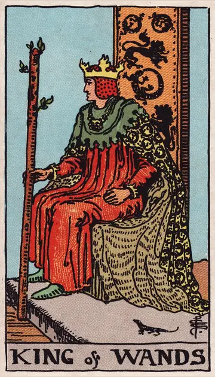

正位置ワンドのキングの正位置
キーワード：リーダーシップ・情熱・ビジョン
恋愛
頼りがいのある態度で、関係をリードできる時です。
相手の気持ちあなたを頼りがいのある人だと感じているようです。
この先頼れる存在として、関係が深まりそうです。
アドバイス将来を見据えて、あなたから関係をリードしましょう。
気をつけること一方的に決めすぎないように。
この先頼れる存在として、関係が深まりそうです。
アドバイス将来を見据えて、あなたから関係をリードしましょう。
気をつけること一方的に決めすぎないように。
人間関係
周りをまとめ、引っ張っていける時です。
相手の気持ちあなたについていきたいと感じているようです。
この先周りから信頼される立場になりそうです。
アドバイスみんなの意見をまとめ、方向を示しましょう。
気をつけること自分の考えを押しつけないように。
この先周りから信頼される立場になりそうです。
アドバイスみんなの意見をまとめ、方向を示しましょう。
気をつけること自分の考えを押しつけないように。
仕事・学業
大きなビジョンを描いて、実行に移せる時期です。
この先大きなプロジェクトを成功に導けそうです。
アドバイス目標を掲げ、周りを巻き込んで進めましょう。
気をつけること理想ばかりで、現実を見落とさないように。
アドバイス目標を掲げ、周りを巻き込んで進めましょう。
気をつけること理想ばかりで、現実を見落とさないように。
お金
お金について、大きな判断ができる時です。
この先大きな目標に近づけそうです。
アドバイス長い目で見て、お金の使い方を決めましょう。
気をつけること強気になりすぎて、リスクを軽く見ないように。
アドバイス長い目で見て、お金の使い方を決めましょう。
気をつけること強気になりすぎて、リスクを軽く見ないように。
生活
暮らしの方針を、しっかり決められる時です。
この先思い描いた暮らしが、形になりそうです。
アドバイス理想の暮らしに向けて、目標を立てましょう。
気をつけること家族に、自分のやり方を押しつけないように。
アドバイス理想の暮らしに向けて、目標を立てましょう。
気をつけること家族に、自分のやり方を押しつけないように。
今日の運勢
堂々と決断できる日です。
この先決断が、良い結果につながりそうです。
アドバイス迷っていることを、今日決めてしまいましょう。
気をつけること頑固になりすぎないように。
アドバイス迷っていることを、今日決めてしまいましょう。
気をつけること頑固になりすぎないように。
逆位置ワンドのキングの逆位置
キーワード：独りよがり・強引・短気
恋愛
自分の考えを押しつけやすい時です。
相手の気持ちあなたとの関係で、主導権を握りたいと感じているようです。
この先歩み寄れば、信頼を取り戻せそうです。
アドバイス相手の意見を最後まで聞いてから、話しましょう。
気をつけること相手を思いどおりにしようとしないように。
この先歩み寄れば、信頼を取り戻せそうです。
アドバイス相手の意見を最後まで聞いてから、話しましょう。
気をつけること相手を思いどおりにしようとしないように。
人間関係
強引さが、反発を招きやすい時です。
相手の気持ちあなたに強く出すぎたと感じているようです。
この先聞く姿勢を持てば、周りの協力が得られそうです。
アドバイス周りの力を信じて、任せてみましょう。
気をつけること立場を振りかざさないように。
この先聞く姿勢を持てば、周りの協力が得られそうです。
アドバイス周りの力を信じて、任せてみましょう。
気をつけること立場を振りかざさないように。
仕事・学業
独断で進めて、つまずきやすい時期です。
この先計画を見直せば、再び前進できそうです。
アドバイスチームの声を聞いて、計画を見直しましょう。
気をつけること無謀な計画を押し進めないように。
アドバイスチームの声を聞いて、計画を見直しましょう。
気をつけること無謀な計画を押し進めないように。
お金
強気なお金の判断で、失敗しやすい時です。
この先冷静になれば、立て直せそうです。
アドバイス人の意見も聞いてから、決めましょう。
気をつけること無謀な使い方をしないように。
アドバイス人の意見も聞いてから、決めましょう。
気をつけること無謀な使い方をしないように。
生活
自分のやり方に、こだわりやすい時です。
この先柔軟になれば、暮らしやすくなりそうです。
アドバイス周りの意見も、取り入れてみましょう。
気をつけること頑固になって、ぶつからないように。
アドバイス周りの意見も、取り入れてみましょう。
気をつけること頑固になって、ぶつからないように。
今日の運勢
短気を起こしやすい日です。
この先冷静になれば、良い判断ができそうです。
アドバイス怒りを感じたら、少し時間をおきましょう。
気をつけること大きな決断を、感情で下さないように。
アドバイス怒りを感じたら、少し時間をおきましょう。
気をつけること大きな決断を、感情で下さないように。
このページの文章は、アプリ「ひとやすみタロット」の結果に使っている文章です。アプリでは、あなたの相談や、カードが出た位置（今の状況・これからの流れ・アドバイス）に合わせて、この中から文章を選びます。逆位置の読み方は逆位置のことをご覧ください。
「ワンドのキング」が出たら、あなたの相談ではどう読む？
アプリでは、質問への答えに合わせて、カードの言葉をあなたの相談に合わせて届けます。
Android 対応・会員登録なし